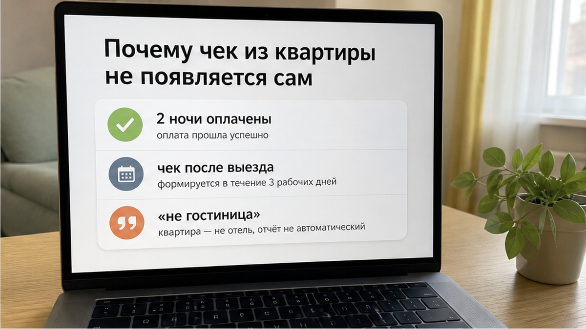
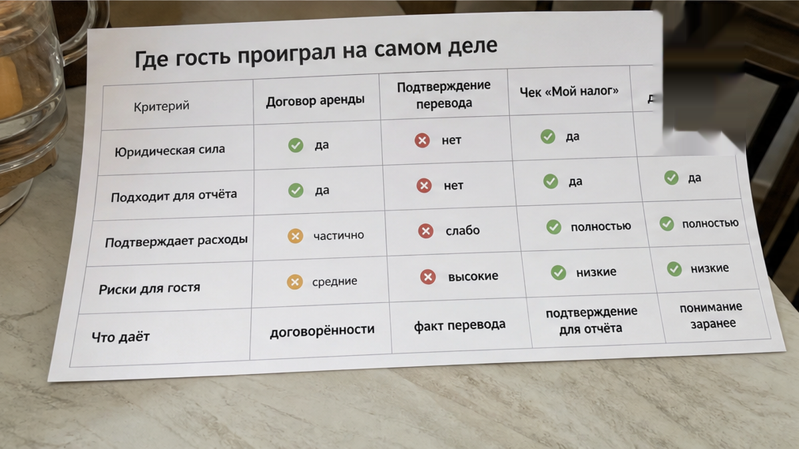
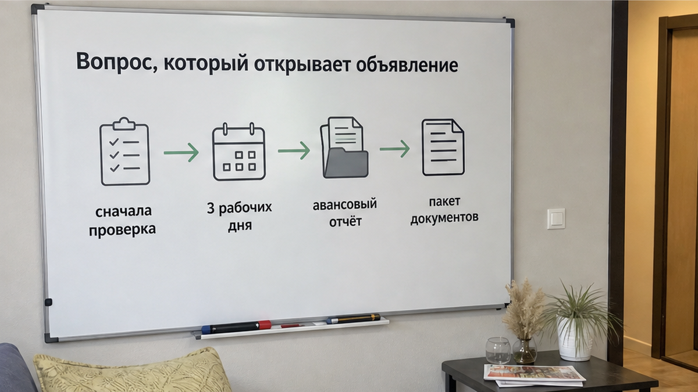

«Где чек за проживание?» — этот вопрос появляется не в квартире и не у двери с ключницей. Он приходит позже: когда командировка закончилась, вы дома, а бухгалтерия смотрит на выписку из банка и переписку в мессенджере.
2 ночи в Тюмени вы оплатили переводом на карту. Квартира была нормальной: заселились, поспали, провели созвоны, выехали спокойно. Хозяин отвечал, ключ лежал в сейфе, вода в чайнике была. Потом вы написали: «Нужен чек для бухгалтерии за 2 ночи». И получили: «Мы не гостиница, чека не будет».
В этот момент ломается не сервис. Ломается ожидание: будто посуточная квартира — это гостиница без стойки регистрации, но с тем же комплектом документов по умолчанию. Деньги ушли — значит, бумага должна появиться сама. Нет. Не должна.
Я хост посуточной в Тюмени. Это «Добрый дом». Telegram · MAX. И я регулярно вижу одну и ту же историю: вопрос о документах задают после перевода, когда у гостя уже нет выбора, а у хозяина — обязанности срочно подстраиваться под бухгалтерию.
Сначала «скиньте выписку, этого хватит». Потом «документы на следующей неделе». Потом сообщения прочитаны, но ответа нет. Бухгалтерия здесь не вредничает: ей нужно подтвердить расход для авансового отчёта, а не принять на веру скриншот «перевод физическому лицу».

Когда человек ищет квартиры посуточно тюмень, он видит фотографии, цену за ночь, время заезда. Голова сама дорисовывает ресепшен, счёт, QR-код и привычный гостиничный чек. Но за объявлением может стоять физлицо, самозанятый, ИП или управляющая компания. И документы у них будут разными.
Понять, кто перед вами, после оплаты — значит понять это поздно.
Бухгалтеры часто ориентируются на письмо Минфина № 03-03-07/803 от 15.01.2016: расходы на наём жилья в командировке должны быть обоснованы и подтверждены документами. Договор найма вместе с платёжными документами может подтвердить расход; копию свидетельства о собственности требовать не обязательно. Но это не означает, что подойдёт любая переписка или один скриншот перевода.
Если принимающая сторона работает как самозанятый, она может сформировать чек в приложении «Мой налог» на конкретное поступление. НПД составляет 4% при оплате от физлица и 6% при оплате от организации. Но сам статус и готовность выдать чек надо выяснять до перевода. Договор сам по себе фискальный чек не заменяет.
В публикации HR Tek от 31.08.2026 со ссылкой на постановление № 501 от 16.04.2025 отдельно напоминают: авансовый отчёт сдают в течение трёх рабочих дней после возвращения. По жилью обычно ждут договор и платёжный документ. Это не юридическая консультация и не универсальное правило для каждой компании: внутренняя политика работодателя может быть строже.

Не в момент ответа «мы не гостиница». Раньше — когда деньги ушли без вопроса, кто их принимает и какой пакет будет выдан.
Не уточнили: физлицо это, самозанятый или ИП. Не спросили сроки. Не проверили, будет ли чек «Мой налог» именно на этот платёж. Получился не обман ожиданий, а сделка с пустым местом там, где должен был быть документ.
Так же начинается история, когда перевели предоплату — и чат замолчал: сначала деньги, потом надежда на договорённость. Похожая логика работает и там, где фото паспорта улетело в чат, а код так и не прислали. Гость уже сделал свой шаг, а ответного обязательства нет.
Командировка вообще плохо переносит договорённости «потом». Wi‑Fi может не вытянуть созвон, планы меняются, а отменённый рейс превращает поездку в отдельный вопрос: как вернуть предоплату и подтвердить движение денег. Бумажный след — не скучная формальность. Это страховка, когда всё пошло не по плану.
Вопрос для тех, кто ездит по работе: у вас бухгалтерия принимает договор плюс чек «Мой налог» или нужен именно кассовый чек с QR-кодом? Напишите в Telegram или MAX. Чем точнее гости называют требования заранее, тем меньше сюрпризов у всех.

До перевода спросите ровно так:
«Какой пакет документов и в какой срок вы даёте для авансового отчёта?»
Этот вопрос полезнее десятка отзывов. Тот, кто работает с командировочными, обычно отвечает предметно: договор найма, чек «Мой налог» на дату оплаты, сроки отправки. Тот, кто не работает, начинает с «а зачем вам», «всем хватает выписки» или обещает что-нибудь после выезда.
И это тоже ответ. Просто не тот, который нужен человеку с авансовым отчётом через три рабочих дня.
Не надо требовать от каждого посуточника гостиничную схему. Но и не надо покупать проживание, надеясь, что бухгалтерия потом примет любой след оплаты. Условия документов — часть бронирования, как цена, адрес и время заселения.
Нет. Так не заселяем.
Документы нельзя оставлять на «потом». Для гостя это «потом» наступает в офисе, а у хозяина может не наступить вовсе. Сначала проговариваем, кто принимает оплату, что именно выдаётся и в какой срок. Потом перевод.
Сначала проверка. Потом перевод. Не наоборот.
Квартира на две ночи — не отель без ресепшена. Это частный найм, где документ не появляется автоматически. Его закладывают в сделку заранее — так же, как код от двери и время заезда.
Едете в Тюмень по работе и нужен понятный пакет документов? Напишите до бронирования: Telegram «Добрый дом» или MAX. По конкретному заезду поможет менеджер. Свободные даты и цены — на странице бронирования, подробности — на сайте Добрыйдом-72.рф. Телефон: +7 (993) 574-83-22.